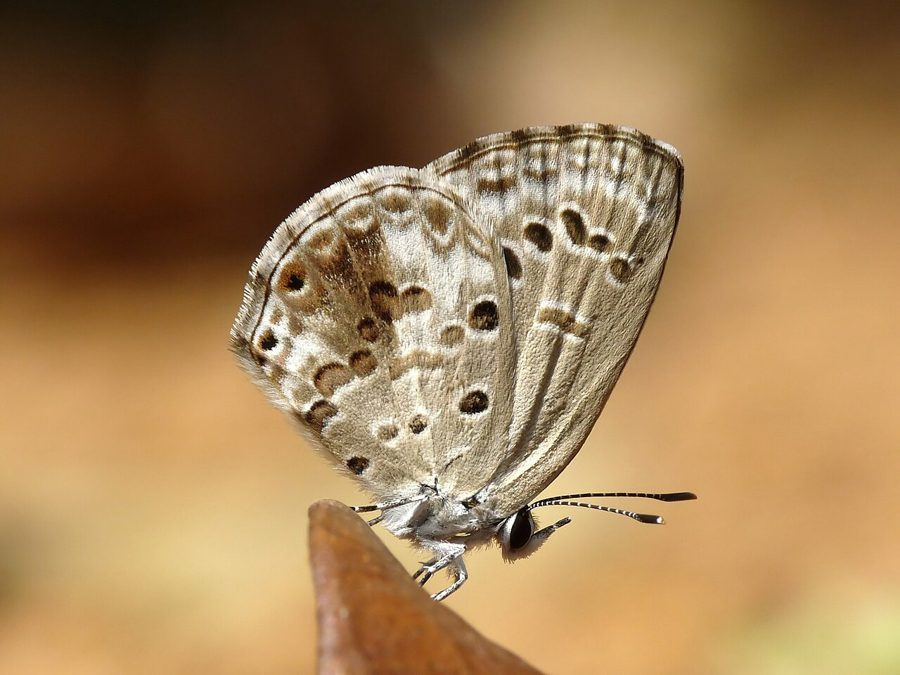

लाइम ब्लू तितलीLime Blue
Chilades laius · Lycaenidae · INS-0134

- Scientific name वैज्ञानिक नाम
- Chilades laius (Stoll, 1782)
- Family कुल
- Lycaenidae
- Hindi हिंदी
- लाइम ब्लू तितली
- Local names स्थानीय नाम
- lime blue, blue
- Status here यहाँ की स्थिति
- native
- Movement आवागमन
- Resident, here all year
- Known from कहाँ दर्ज
- Others have published records from the wider Awadh–Purvanchal plain, none yet from Basti–Ayodhya अवध–पूर्वांचल से दूसरों के प्रकाशित अभिलेख, बस्ती–अयोध्या से अभी नहीं
- IUCN IUCN
- not evaluated
- Review समीक्षा
- audited and independently read
When to look कब देखें
Present all year. साल भर मौजूद।
Tell it apart from इनसे अलग पहचानें
लाइम ब्लू तितली / Lime Blue
Chilades laius (Stoll, 1782) — Lycaenidae
लाइम ब्लू तितली — एक नीली तितली जो नींबू और संतरे के बागों में पाई जाती है। इसके नर के पंख नीले होते हैं जबकि मादा के पंख भूरे होते हैं। यह तितली गर्मी और सर्दी में अलग दिखती है। इसका कैटरपिलर नींबू जैसे साइट्रस पौधों की कलियों को खाता है।
Quick Identification त्वरित पहचान
| Feature | Description |
|---|---|
| Size | Small butterfly, wingspan 20-24 mm |
| Male colour | Bright metallic blue upperside (dry season); violet-blue (wet season) |
| Female colour | Greyish-brown with blue patches at wing bases and margins |
| Underside | Pale with distinct dark spots and line patterns |
| Pattern | Characteristic row of spots on underside |
| Flight | Low, erratic flight; stays near host plants |
Field tip: A small blue butterfly associated with citrus plants. Males are bright blue, females are dull brown with blue patches. Found in citrus groves and gardens. Look for it on or near lime and orange trees.
हिंदी — कैसे पहचानें: नींबू के बाग़ में, नर नीले पंख, मादा भूरी। नीचे काले धब्बे।
Morphology आकारिकी
Biometrics:
| Measurement | Range |
|---|---|
| Wingspan | 20-24 mm |
| Forewing length | 10-12 mm |
| Body length | 8-10 mm |
Wings:
- Upperside (male, dry season): Bright metallic blue with silvery sheen.
- Upperside (male, wet season): Deeper violet-blue.
- Upperside (female): Greyish-brown with blue restricted to basal areas and sometimes along margins.
- Underside: Pale grey or whitish with characteristic dark spots and lines; a distinctive row of dark spots on hindwing.
Body: Small, dark; antennae clubbed.
Sexual dimorphism: Males are bright blue; females are dull brown with limited blue, showing strong sexual dimorphism.
Seasonal variation: Wet and dry season forms show colour variation, particularly in males.
Life Cycle / Phenology जीवन चक्र
| Stage / Month | Event |
|---|---|
| January–December | Year-round breeding; multiple overlapping generations |
| Egg | Laid on citrus buds and young leaves; incubation 4-6 days |
| Larva | Green or yellowish caterpillar; feeds on flower buds and young leaves; 2-3 weeks |
| Pupa | Small, greenish; formed on or near host plant; 5-10 days |
| Adult | 2-4 weeks lifespan; very active during monsoon and post-monsoon |
| Wet season form | May–September; deeper colour |
| Dry season form | October–April; lighter colour |
हिंदी: साल भर। नींबू की कली पर हरा कैटरपिलर। गर्मी और सर्दी में अलग रंग।
Host Plants or Prey आहार
Larval host plants:
- Lime (Citrus aurantifolia)
- Pomelo (Citrus maxima)
- Orange (Citrus sinensis)
- Other citrus species
- Various Toddalia and related plants
Adult food sources:
- Nectar from flowers
- Pollen
- Damp spots on ground
Predators / Natural Enemies शत्रु
- Parasitoid wasps: Attack caterpillars and pupae
- Small birds: Flycatchers and warblers
- Spiders: Web-building and jumping spiders
Agricultural / Human Relevance कृषि प्रासंगिकता
Crop association. The caterpillars feed on citrus flower buds and young leaves but cause minimal damage to commercial crops. Sometimes considered a minor pest in citrus nurseries.
Garden presence. Common in citrus groves and gardens, particularly where lime, orange, and other citrus fruits are grown. The butterfly indicates the presence of citrus plants.
Historical significance. Documented in historical accounts as common throughout the plains of India wherever citrus plants grow.
Today. Still abundant in villages and gardens with citrus trees, particularly during the monsoon and post-monsoon seasons.
हिंदी: नींबू के बागों में आम। नुकसान बहुत कम।
Expected Locally स्थानीय रूप से अपेक्षित
Not a field record. Written from published accounts for eastern Uttar Pradesh. No confirmed local sighting yet — if you have seen it, that is what the atlas needs.
अभी तक स्थानीय पुष्टि नहीं। यह विवरण प्रकाशित स्रोतों से है, किसी अवलोकन से नहीं।
To be expected year-round in citrus groves and gardens wherever lime, orange, and other citrus fruits are grown throughout the region. Peak abundance during monsoon and post-monsoon seasons. Look on citrus trees for adults and caterpillars. A photograph with date and location would confirm a local record.
Distribution वितरण
Global range: India, Sri Lanka, Myanmar, Taiwan, Hong Kong, Philippines, and Sulawesi.
In India: Widespread throughout the plains, common wherever citrus plants grow; most abundant in southern and central regions.
In Uttar Pradesh: Found in gardens and cultivated areas; common in villages where citrus fruits are grown.
In Basti district / eastern UP: Expected wherever lime, orange, and other citrus plants are cultivated, year-round, particularly during monsoon.
Research Questions शोध प्रश्न
Anyone can investigate these | कोई भी इन प्रश्नों की जाँच कर सकता है
- How many generations of Lime Blue occur on citrus plants in Basti per year? / नींबू के बागों में एक साल में कितनी पीढ़ियाँ होती हैं? — Track caterpillars and pupae throughout the year.
- Is the wet season form noticeably more violet-blue than the dry season form in local populations? — Collect and compare specimens.
- Do Lime Blues prefer young flower buds or mature leaves for egg-laying? — Observe egg-laying preferences on host plants.
- How much damage can caterpillars cause to young citrus plants in a nursery? — Quantify leaf and bud loss in cultivated plants.
- What is the courtship behaviour and mating season of this species? — Observe mating pairs in gardens.
Similar Species मिलती-जुलती प्रजातियाँ
| Species | How to tell apart | हिंदी | |
|---|---|---|---|
| [[common_cerulean\ | Common Cerulean]] (Jamides celeno) | Similar size; lacks the bold row of spots on hindwing underside; lives in different habitat (gardens vs citrus groves) | सेरुलियन तितली — अलग पैटर्न |
| Other small Lycaenid blues | Varying size and colour; different underside patterns | दूसरी नीली तितलियाँ |
Field rule: A small blue butterfly found on citrus plants, males bright blue and females dull brown, with characteristic row of dark spots on hindwing underside, is the Lime Blue.
Taxonomy & Classification वर्गीकरण
Original description. Described by Stoll in 1782 in Pap. Exot. Type locality: India, Coromandel coast.
Subspecies. The subspecies found in India and eastern UP is Chilades lajus lajus (Stoll, 1782). Note: The spelling variation laius vs lajus appears in older literature; lajus is the correct original spelling.
Family and order placement. Order Lepidoptera, family Lycaenidae, subfamily Polyommatinae. The genus Chilades is specialized for citrus plants.
Phylogenetic notes. Chilades species show specialization for citrus plants, reflecting their association with cultivated citrus across tropical Asia.
IUCN status rationale. Not formally assessed. Abundant and widespread; no conservation concerns.
Photo Gallery फोटो गैलरी
No photos yet — add field photos to media/species/lime_blue/ and run node scripts/sync_photos.js.
Wanted:
- Male showing bright metallic blue colour
- Female showing dull brown with blue patches
- Wet season form (darker)
- Dry season form (lighter)
- Underside view showing characteristic spot row
- Caterpillar on citrus bud
- Adult on citrus flower
References संदर्भ
- Stoll, C. (1782). Pap. Exot. [original description]
- Kunte, K. (2009). Butterflies of Peninsular India. Universities Press, Hyderabad.
- Kehimkar, I. (2016). BNHS Field Guide: Butterflies of India. Bombay Natural History Society, Oxford University Press, Mumbai.
- Indian Foundation for Butterflies. Checklist of Indian Lycaenidae and Host Plants. Retrieved from https://www.ifoundbutterflies.org
- Wynter-Blyth, M. A. (1957). The Butterflies of India. 2nd edition. Bombay Natural History Society.
- GBIF Occurrence Data — Chilades laius, India (2023). GBIF taxon key: [to be filled].
Source file: species/fauna/insects/lime_blue.md